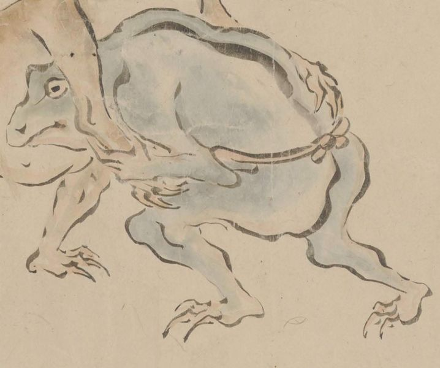

蛙；カエル，動物；ドウブツ

まわしを締めた青い蛙が茶色い蛙と組み合い、相撲をとっている。青い蛙は低い体勢で茶色い蛙の懐に入り、左手で相手の右手を掴んでいる。
出典：親書誌：U426_nichibunken_0435：［妖怪絵巻］／日付：2017／資源識別子：U426_nichibunken_0435_0001_0017
Copyright (c)2010- International Research Center for Japanese Studies, Kyoto, Japan. All rights reserved.